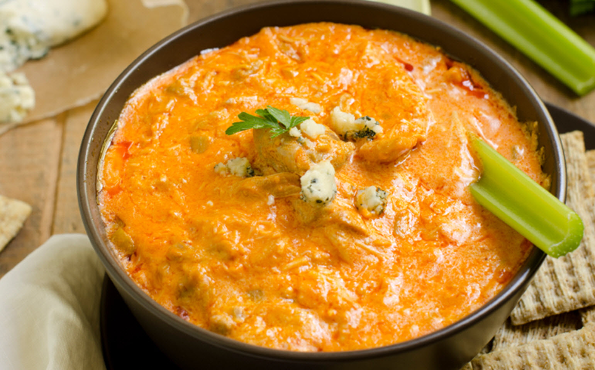

Buffalo Chicken Dip

Description
This tangy, creamy Buffalo chicken dip tastes just like Buffalo
chicken wings! Perfect for parties and game day, this chicken
dip is best served hot with crackers and celery sticks.
Ingredients
- 2 (10 ounce) cans chunk chicken, drained
- ¾ cup pepper sauce (such as Frank's Red Hot®)
- 2 (8 ounce) packages cream cheese, softened
- 1 cup Ranch dressing
- 1 ½ cups shredded Cheddar cheese
- 1 bunch celery, cleaned and cut into 4 inch pieces
- 1 (8 ounce) box chicken-flavored crackers
Steps
- Heat chicken and hot sauce in a skillet over medium heat
until heated through, 3 to 5 minutes. Stir in cream cheese
and ranch dressing. Cook and stir until well blended and
warm, 3 to 5 minutes.
- Mix in 1/2 of the Cheddar cheese, and transfer the mixture
to a slow cooker. Sprinkle the remaining cheese over top.
- Cover and cook on Low until dip is hot and bubbly, about
35 minutes.
- Serve with celery sticks and crackers.